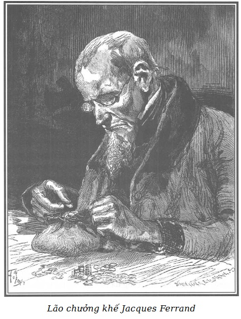

Vào thời điểm xảy ra những sự kiện trên, ở một đầu phố du Sentier có một bức tường dài nứt nẻ, trát một lớp thạch cao bên ngoài, trên cắm lởm chởm mảnh chai, bức tường này ngăn khu vườn nhà Jacques Ferrand, viên chưởng khế, dẫn đến phần chính ngôi nhà dựng trên mặt phố và chỉ có một tầng gác, bên trên có những tầng thượng.
Hai tấm biển rộng bằng đồng mạ vàng, phù hiệu của giới chưởng khế đặt trên chiếc cổng đã mọt mà người ta không còn nhận ra màu cũ do bị bùn che phủ.
Cổng này dẫn đến một lối đi ẩn dưới lùm cây, bên phải là nhà người gác cổng già gần như điếc, trước đây thuộc giới thợ may, cũng như ông Pipelet thuộc giới đóng giày, về phía trái là tàu ngựa vừa dùng làm kho, làm nơi giặt quần áo, nơi xếp củi, nơi đặt một khu nuôi thỏ mới gây giống mà người gác cổng nhốt trong máng ăn để làm khuây khỏa nỗi phiền muộn vì sự góa bụa gần đây của ông.
Bên cạnh nhà này là cửa của một cầu thang ngoằn ngoèo, vừa hẹp vừa tối, dẫn tới văn phòng nhờ hình một bàn tay vẽ bằng mực đen, ngón trỏ chỉ vào phòng có dòng chữ bằng mực đen trên tường: “Văn phòng ở tầng một” để thông báo cho khách hàng.
Tòa nhà gần như trong tình trạng hỏng nặng, tường nhiều vết nứt sâu, cửa sổ và cửa chớp trước đây sơn màu xám nay gần như đen hẳn; cùng năm tháng, sáu cửa kính ở tầng gác thứ nhất, nhìn xuống sân không có màn che, các tấm kính đã trở nên mờ đục; ở tầng trệt người ta nhìn thấy qua các tấm kính, trong hơn, những màn che bằng vải vàng, phai màu có hình hoa hồng đỏ…
Lão Ferrand coi trọng vẻ bề ngoài đó, hay đúng hơn là cái hiện thực đó.
Dưới mắt người bình thường, vô tư và thoải mái luôn luôn được coi như là biểu hiện của nết không vụ lợi, nhếch nhác coi như nếp sống khắc khổ.
Thấy cái xa xỉ hoặc quá đáng về tiền tài của một vài viên chưởng khế hoặc những bộ trang phục lộng lẫy phi thường của các chưởng khế phu nhân, và ngôi nhà âm u của lão Ferrand, không thiết gì đến thanh lịch, cầu kỳ và xa hoa, khách hàng cảm thấy một niềm kính trọng hay đúng hơn một sự tin cậy mù quáng đối với một con người mà theo con số khách hàng đông đảo và tài sản mà người ta đoán định hẳn có thể nói như nhiều đồng nghiệp khác: “Xe cộ của tôi (họ thường nói thế), cuộc đại dạ hội của tôi, trại ấp của tôi, ngày đại nhạc hội của tôi… Vậy thế mà, khác xa với điều đó, Ferrand vẫn sống với sự tiết kiệm cao độ, vì vậy tiền ký gửi, tiền đầu tư, việc ủy thác di sản, tóm lại là tất cả mọi công việc đều ùn ùn đến nhà lão Ferrand do uy tín về sự liêm khiết đã được nhiều người thừa nhận, tăm tiếng thiện ý nổi nhất.
Sống thanh đạm như lão đã sống, viên chưởng khế chiều theo thị hiếu của mình. Lão ghét chốn phồn hoa, những cảnh huy hoàng, những thú vui tốn kém, cho dẫu lão có nghĩ khác thế, lão cũng không ngần ngại hy sinh các thị dục mạnh mẽ nhất cho cái bề ngoài mà lão cần tạo ra.

.Sau đây là một vài nét về tính cách con người này.
Đó là một trong những đệ tử của đại gia đình những người hà tiện.
Hầu như người ta thường thể hiện kẻ hà tiện dưới một vẻ lố bịch hoặc thô kệch, những kẻ độc ác nhất đều quá ích kỷ hay cay nghiệt.
Phần đông tăng thêm của cải của họ bằng cách tích trữ tiền của, một vài người trong số này, rất ít ỏi, rất ít thôi, mạo hiểm đem tiền cho vay lãi một phần ba mươi phân, những tay can trường nhất mới chỉ dám đưa mắt dò xem cái vực giao dịch, chứng khoán… nhưng hầu như chưa từng có một người hà tiện nào, để thu thêm tài sản mới, có thể đi đến phạm trọng tội, kể cả tội giết người.
Điều đó có thể hiểu được.
Tính hà tiện trước hết là một dục vọng tiêu cực thụ động.
Người hà tiện, trong những mưu mô liên tục, thường nghĩ đến cách làm giàu mà không phải chi tiêu quá giới hạn của cái cần thiết tối thiểu cho cuộc sống nhiều hơn là nghĩ đến cách làm giàu dựa vào kẻ khác, anh ta trước hết bị đau đớn dằn vặt vì bo bo giữ của.
Yếu đuối, rụt rè, quỷ quyệt, đa nghi, nhất là khôn ngoan, thận trọng, không bao giờ tấn công, dửng dưng trước những nỗi khổ của đồng loại, chí ít kẻ hà tiện cũng không gây nên những nỗi khổ ấy, anh ta trước hết và trên hết là con người già dặn, thiết thực hay đúng hơn anh ta chỉ hà tiện bởi vì anh ta chỉ tin vào sự việc, tin vào số vàng anh ta giữ trong két.
Những chuyện đầu cơ, những chuyện cho vay chắc chắn ít cám dỗ được anh ta, bởi vì tuy vị tất xảy ra, những việc này vẫn còn nhiều khả năng bị mất sạch và anh ta thà hy sinh tiền lời còn hơn đưa vốn ra mà không đảm bảo.
Một người rụt rè như vậy, một người khinh thị những tình huống có thể xảy ra như vậy, ít khi có cái quả quyết man rợ của kẻ gian ác, sẵn sàng chịu khó mạo hiểm đi tù khổ sai hoặc mất đầu để chiếm đoạt một cơ nghiệp cho mình.
Mạo hiểm là một từ bị xóa trong từ vựng của người hà tiện.
Chính trên tinh thần này, theo chúng tôi, Jacques Ferrand là một ngoại lệ khá kỳ lạ, hẳn là một thể loại mới của giống hà tiện ấy.
Bởi vì Jacques Ferrand mạo hiểm, và mạo hiểm quá quắt.
Lão tin vào sự khôn ngoan của lão, khôn ngoan cực kỳ; vào sự giả đạo đức của lão, sự giả đạo đức ấy cũng rất sâu sắc; vào trí tuệ của lão, trí tuệ này uyển chuyển và phong phú; vào sự cả gan của lão, sự cả gan này cũng rất quỷ quái, nó đảm bảo cho tội ác của lão không bị trừng trị, và những tội ác ấy kể cũng đã khá nhiều.
Jacques Ferrand là một ngoại lệ kép.
Thường thường những con người mạo hiểm, có nghị lực không bao giờ lùi bước trước bất cứ tội ác nào để kiếm ra vàng thì lại đều bị những dục vọng mạnh mẽ quấy nhiễu, cờ bạc, xa hoa, chè chén, bê tha, trụy lạc.
Jacques Ferrand không hề biết đến bất cứ một nhu cầu mãnh liệt, bừa bãi nào, gian giảo và nhẫn nại như một kẻ dối trá, tàn bạo và liều lĩnh như một kẻ giết người, lão tiết độ và chân chỉ như Harpagon*.
Một nhân vật trong hài kịch của Molière.
Một dục vọng duy nhất hoặc đúng hơn một sự thèm muốn duy nhất, nhưng xấu xa, đê tiện và gần như tàn ác, đầy thú tính thường kích động lão, đẩy lão đến mức hoảng loạn.
Đấy là sự dâm đãng.
Sự dâm đãng của con vật, sự dâm đãng của con chó sói hay con cọp.
Khi chất men cay đắng và vẩn đục ấy kích thích dòng máu của con người lực lưỡng ấy, lửa dục ngùn ngụt bốc cao, nhục dục sục sôi làm lão trở nên mụ mẫm, lúc ấy lão quên cả thận trọng quỷ quyệt thường ngày và biến thành, như chúng tôi vừa nói, cả cọp lẫn sói, bằng chứng là những việc cưỡng bức buổi đầu của lão đối với Louise.
Sự mê hoặc, sự giả đạo đức táo tợn mà lão đã sử dụng để phủ nhận tội ác của lão có thể nói là ở trong kiểu cách của lão hơn là ở trong sức mạnh công khai của lão.
Ham muốn cục cằn, nồng nhiệt vũ phu, miệt thị hung bạo, đấy là những cung bậc trong tình yêu của con người này.
Như thế để thấy rõ ràng, qua cách đối xử của lão đối với Louise, sự tử tế, lòng nhân hậu, sự hòa hợp đối với lão hoàn toàn xa lạ. Việc cho bác Morel vay một nghìn ba trăm franc nặng lãi đối với Ferrand vừa là một cái bẫy vừa là một phương tiện để làm áp lực, vừa là một món lời. Biết rõ người thợ ngọc là người trung thực, lão biết sớm muộn món nợ cũng sẽ được thanh toán, tuy nhiên nhan sắc của Louise cũng đã gây cho lão một ấn tượng khá sâu sắc để lão có thể không khước từ việc đặt tiền một cách có lợi như thế.
Ngoài nhược điểm này, Jacques Ferrand chỉ yêu thích vàng.
Lão mê vàng vì vàng.
Không phải chỉ vì khoái lạc mà vàng đem đến, lão vốn rất khắc kỷ.
Cũng không phải chỉ vì khoái lạc do vàng đem tới mà lão chẳng có nổi một tâm hồn thi sĩ để mà chỉ hưởng thụ suông kiểu đầu cơ, như nhiều kẻ hà tiện khác. Đối với những gì thuộc về lão, lão mê chiếm hữu bởi niềm vui được chiếm hữu đã đành, mà ngay cả tài sản của người khác, nếu là vật ký gửi quý giá, mà vào tay lão, thì đến lúc phải hoàn trả, lão cũng thấy đau xót, thất vọng, giống như nỗi tê tái của người thợ kim hoàn Cardillac khi phải trao lại món đồ trang sức mà ông ta đã đem hết tài nghệ và tâm trí để tạo thành một kiệt tác nghệ thuật.
Ấy cũng là vì đối với viên chưởng khế, việc lão nổi tiếng trung thực cũng là một kiệt tác về nghệ thuật. Ấy cũng là vì các vật ký gửi đối với lão cũng là những báu vật mà lão không thể không hoàn trả với một niềm luyến tiếc xót xa.
Biết mấy là công phu, là mánh khóe, là mưu mẹo, là khéo léo, nói gọn lại biết mấy là nghệ thuật lão đã phải thi thố, để kéo món tiền ấy vào tủ sắt của lão, để hoàn thiện cái tiếng tăm công minh chính đại sáng ngời mà những dấu hiệu tin cậy quý giá nhất đã dát vào như châu ngọc dát vào mũ miện của Cardillac, người thợ ngọc nổi tiếng đương thời.
Theo lời đồn đại, nghề của người thợ ngọc này càng hoàn thiện thì ông ta lại càng thiết tha yêu quý các đồ trang sức của mình, luôn coi công trình mới nhất là kiệt tác, và xót xa khi phải trao nó cho người khác.
Jacques Ferrand càng tự hoàn thiện trong tội ác lại càng tha thiết với những dấu hiệu tin cậy vang dội mà người ta đồng ý trao cho lão, luôn luôn coi hành động gian ác mới nhất của lão như một kiệt tác.
Chúng ta sẽ thấy, trong đoạn tiếp của câu chuyện, bằng mọi phương tiện kỳ diệu nào, bố trí và mưu mô nào, lão đã chiếm đoạt được nhiều món tiền kếch xù mà không hề bị trừng phạt.
Cuộc sống ngầm bí hiểm không ngừng đem lại cho lão những cảm xúc mãnh liệt ở người đánh bạc. Chọi lại với tài sản của mọi người, Ferrand đem cái bề ngoài đạo đức, mẹo lừa, cái liều lĩnh táo tợn, trí tuệ ra cá cược, lấy tiền thắng bạc ra đánh tiếp, gậy ông đập lưng ông, như người ta vẫn thường nói; vì không kể đến việc làm tổn thương cho công lý người đời mà lão cố tình coi như tầm thường, như “một cái ống khói có thể đổ ngay trên đầu lão”, mất theo lão có nghĩa là không được; đã thế liệu có phải là do thiên bẩm tai ác mà như là châm biếm chua chát, lão thấy mình không ngừng được trong sự quý giá vô bờ, trong sự tín nhiệm vô hạn mà lão có được không những trong giới khách hàng giàu có mà còn trong lớp người tiểu tư sản và thuyền thợ trong khu của lão.
Số đông khách hàng gửi tiền ở lão bảo rằng: “Ông ta thiếu nhân từ, đúng đấy, ông ta quả không mấy sùng đạo, nhưng ông ta đáng tin cậy hơn cả chính phủ và các quỹ tiết kiệm.”
Mặc dù khôn khéo hiếm thấy, con người này đã phạm hai sai lầm mà những kẻ phạm trọng tội giảo quyệt hầu như không bao giờ thoát khỏi.
Đúng là do ngoại cảnh bắt buộc, lão có hai tòng phạm trợ lực; lỗi lầm nghiêm trọng ấy, lão cũng thường nói vậy, đã được sửa chữa một phần; không đứa nào trong hai kẻ tòng phạm dám làm hại lão mà không làm hại chính mình và cả hai đứa đều không rút ra được ở hành động cực đoan ấy một lợi lộc nào khác là sự tố cáo chính họ và cả viên chưởng khế trước sự trừng phạt tội ác nhân danh xã hội.
Về khía cạnh này, như vậy là lão khá yên tâm.
Vả chăng, còn gây tội ác còn cần đồng lõa, dù có nhiều điều bất tiện nhưng đôi lúc vẫn còn lợi dụng được để có sự tiếp tay trong làm ác.
Bây giờ xin nói một đôi lời về con người của lão Ferrand, sau đó xin mời độc giả vào văn phòng của viên chưởng khế, ở đấy chúng ta sẽ gặp lại những nhân vật chính của câu chuyện này.
Jacques Ferrand năm mươi tuổi, nhưng trông như chưa tới bốn mươi, vóc người tầm thước, lưng còng, vai rộng, lực lưỡng, béo lùn, tóc hung, người đầy lông lá như con gấu. Tóc lão dẹt xuống thái dương, trán hói, lông mày thưa, da vàng ủng mang nhiều vết màu hung, mỗi khi lão xúc động mạnh, khuôn mặt vốn vàng hung và đỏ ngầu do máu bốc lên trở thành tím nhợt. Mặt lão tẹt như mặt người chết, người ta thường bảo thế, mũi lão ngắn mà tẹt lại, môi lão mỏng dính gần như không nhận ra được cái miệng như rạch một nét ngang trên mặt. Mỗi lúc lão mỉm cười một cái độc ác và hung dữ, lại lộ ra những chân răng hà và đen. Râu cạo hằng ngày đến tận thái dương, khuôn mặt nhợt nhạt ấy có vẻ vừa khắc khổ vừa thanh thản, bì bì mà lạnh như tiền, lại vừa ra vẻ trầm tư, đôi mắt nhỏ, sắc mà đen, cái nhìn soi mói che lấp sau đôi mắt kính lớn màu lục.
Jacques Ferrand rất tinh mắt nhưng được đôi mắt kính che lấp, lão có thể quan sát mà không bị quan sát lại, đó là một lợi thế đáng kể. Lão hiểu rõ một cái nhìn thường lại có ý nghĩa một cách vô tình. Mặc dù vốn táo tợn mà vẫn tỉnh khô, trong cuộc sống, cũng có đôi ba lần lão gặp phải một vài cái nhìn áp đảo, có sức hấp dẫn kỳ diệu, khiến lão buộc lòng phải cụp mắt xuống. Thế mà trong một vài trường hợp đặc biệt nào đấy, cụp mắt trước người hỏi mình, buộc tội mình hoặc phán xử mình là điều tai hại.
Đôi kính lớn của Ferrand là thứ phòng tuyến an toàn, ở đây lão có thể xem xét kĩ càng những thủ đoạn nhỏ nhặt nhất của đối thủ, vì tất cả mọi người đều là đối thủ của viên chưởng khế, vì tất cả mọi người ít hay nhiều đều bị gã lừa bịp, và những người tố cáo đều là những người bị lừa đã sáng mắt hoặc phẫn nộ.
Lão làm ra vẻ không chú ý đến phục sức, nhếch nhác đến mức gần như không sạch sẽ, hoặc nói đúng hơn, lão bản tính vốn ưa bẩn, mặt lão hai, ba ngày mới cạo một lần, trán lão bẩn và sần sùi, móng tay cáu ghét đen ngòm, lão nặng mùi, hôi không chịu được. Những chiếc redingote cũ đã sờn, những chiếc mũ cáu bẩn, những cà vạt cong queo, những chiếc tất đen, những chiếc giày thô càng đảm bảo với khách hàng về đạo đức của lão, tạo cho lão một dáng dấp dửng dưng với thế tục, một chút hương vị của triết lý thực tiễn làm mọi người ưa thích.
Người ta thường đồn đại là không biết có thị hiếu nào, dục vọng nào, nhược điểm nào làm cho chưởng khế có thể phải hy sinh lòng tin cậy người ta gửi gắm ở lão?
Lão có lẽ kiếm được đến sáu chục nghìn franc mỗi năm, thế mà nhà chỉ nuôi một hầu gái và một bà già làm công việc nặng trong nhà, thú vui duy nhất của lão là mỗi ngày Chủ nhật đến nhà thờ làm lễ và cầu kinh vào chiều tối, lão không thấy nhạc kịch nào sánh được với tiếng nhạc trầm của đại phong cầm, không thấy một buổi gặp mặt trong xã hội thượng lưu nào hơn những buổi chiều êm ả ngồi bên lò sưởi với cha xứ của giáo khu sau bữa ăn chiều đạm bạc. Tóm lại lão đặt cả niềm tin vui trong trung thực, lòng kiêu hãnh trong danh dự, và chân hạnh phúc trong tôn giáo.
Đấy là sự đánh giá mà những người đương thời với Jacques Ferrand nói về con người từ tâm hiếm có ấy.